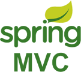

首页 > Spring MVC
Spring MVC框架入门教程
Spring MVC 是 Spring 提供的一个基于 MVC 设计模式的轻量级 Web 开发框架，本质上相当于 Servlet。
Spring MVC 角色划分清晰，分工明细。由于 Spring MVC 本身就是 Spring 框架的一部分，可以说和 Spring 框架是无缝集成。性能方面具有先天的优越性，是当今业界最主流的 Web 开发框架，最热门的开发技能。
一个好的框架要减轻开发者处理复杂问题的负担，内部有良好的扩展，并且有一个支持它的强大用户群体，恰恰 Spring MVC 都做到了。
读者
本教程是为需要详细了解 Spring MVC 框架及其架构和实际应用的 Java 程序员准备的。
教程中通俗易懂的讲解了 Spring MVC 开发过程中涉及的各种知识，并且为每个知识点都提供了实例，以帮助读者快速入门学习。
阅读条件
阅读本教程之前，您应该已经掌握了 Java 编程语言和 Spring 框架。另外，由于本教程中的所有实例都是使用 Eclipse IDE 编译的，所以您还需要对 Eclipse IDE 有基本的了解。
关注公众号「站长严长生」，在手机上阅读所有教程，随时随地都能学习。
不定期发布学习路线+书籍文档+优质视频，为初学者指点迷津。
绑定网站登录功能，再也不用担心密码丢失。
编程11年，建站10年，创业7年，写作6年，既有硬知识，也有软技能。
长期更新，坚持原创，敢说真话，凡事有态度。

微信扫码即可关注